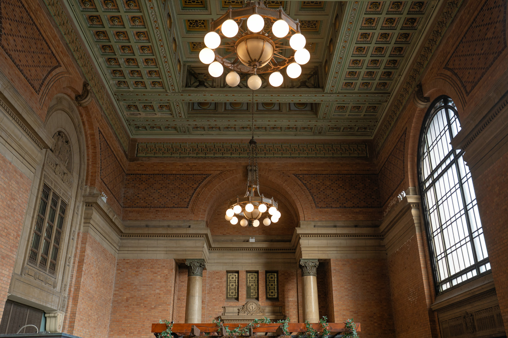

01 · Art
Exhibitions & creative projects
Visual art, photography and cultural exhibitions sit in striking contrast with the station's original steelwork, tiled walls and natural light.
Auckland Heritage Art Centre
Historic halls made active again through exhibitions, creative work and memorable gatherings
A living landmark
The former Auckland Railway Station is more than a backdrop. Its Grand Hall, foyer and naturally lit rooms give artists, organisers and guests an uncommon setting in the centre of Auckland.
The arts programme creates space for exhibitions, cultural projects and collaboration, while the venue welcomes private functions, filming, photography and celebrations.
At the station
01 · Art
Visual art, photography and cultural exhibitions sit in striking contrast with the station's original steelwork, tiled walls and natural light.

02 · Events
The heritage halls can host creative showcases, private functions, fashion, photography and filming, with layouts shaped around each project.
Explore venues
03 · Celebrations
From a small ceremony to a larger reception, the station offers a memorable setting with on-site dining and accommodation close at hand.
Explore weddingsVenue hire
Each space has its own proportions and heritage details. The arts team can help identify the right setting and arrange a viewing before plans are confirmed.
Arrange a venue tourA monumental room for exhibitions, ceremonies, performances and larger occasions.
A flexible arrival space suited to receptions, displays and guest registration.
Naturally lit spaces for photography, workshops, meetings and smaller creative projects.
Film, fashion & photography
The station has long attracted people who see possibility in its monumental rooms, shifting light and preserved architectural detail.

On screen · 1982
Nagisa Ōshima's Merry Christmas, Mr. Lawrence filmed inside the former Auckland Railway Station. The building's interiors became wartime Batavia for the tribunal and imagined-execution sequences, placing the station within an enduring work of international cinema.
Editorial photography
Fashion and portrait photographers use the Grand Hall and Booking Hall to create images with the atmosphere of another era—warm light, deep shadows, brick arches and cinematic scale.

Weddings at Grand Central
The scale of the Grand Hall can hold a generous celebration, while the surrounding rooms allow the day to unfold naturally. Ask the venue team about ceremonies, receptions, photography, on-site dining and accommodation for your guests.
Discover weddingsWhat's on
Exhibitions and creative events are programmed throughout the year. For current dates, visiting information or an opportunity to present your work, contact the Auckland Heritage Art Centre team directly.